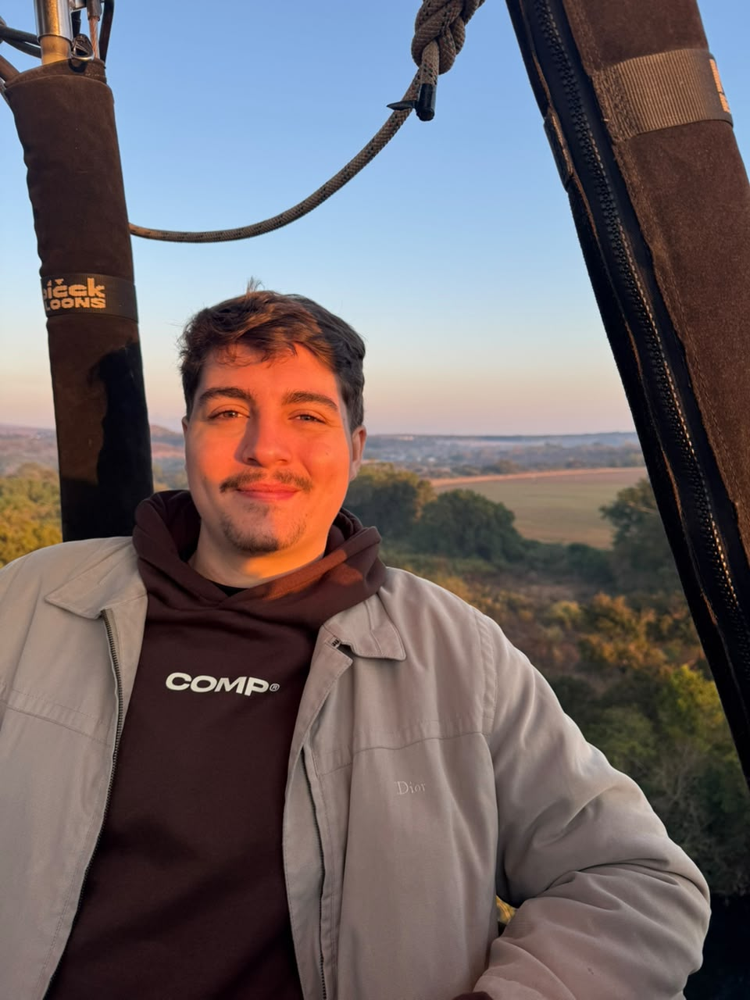

Construo agentes e automações que tiram o trabalho repetitivo da operação, para as pessoas gastarem tempo no que realmente exige cabeça.
Do operacional de eventos para a automação: eu entendo o processo de dentro antes de escrever a primeira linha.

Sou desenvolvedor de IA & Automação na V3A, agência de live marketing. Transformo processos manuais em sistemas que rodam sozinhos, usando LLMs (Claude e OpenAI), Python e n8n.
Antes de programar, vivi a operação de feiras, eventos e congressos. Por isso mapeio o processo antes de automatizar e acompanho a adoção: automação boa é a que o time realmente usa.
Minha base é Engenharia de Software (Python, Django, Next.js, SQL), o que me deixa entregar a ferramenta inteira, não só o prompt.
Converso com quem faz o trabalho e acho o gargalo que mais custa tempo.
Testo o LLM no caso real, com saída estruturada, antes de investir em tela.
Comparo o antes e o depois em minutos, não em opinião.
Deploy, versionamento e acompanhamento do time usando no dia a dia.
Ferramentas internas em produção com Claude API, Python, Next.js e Supabase: de cronogramas de eventos a dashboards de gestão.
Apoio operacional que deu a base de processos que hoje eu automatizo.
Painel de gestão gamificado com IA, automação de slides e protótipos de plataformas de eventos.
passe o mouse (ou toque) nos cards
Cada projeto parte de um problema real. Clique em um card para ver o problema, o que construí e o resultado.
Lê o orçamento do evento, classifica cada item com IA e entrega o cronograma pronto.
30 → 5 min Projeto InternoDe uma pasta do Drive a um PowerPoint completo, no template da agência.
pasta → slides Projeto InternoUm painel de gestão onde cada prédio é um setor da empresa, com IA em cada um.
uso diárioPainel que controla a live inteira: cenas, alertas, doações, chat e cortes.
live no automático githubRespostas anônimas do time viram um painel para priorizar as automações.
dados, não palpite Projeto InternoCatálogo de códigos de atividade para comprovar itens de evento.
3 s por busca Projeto InternoPlataforma de gestão de eventos: convites, check-in por QR Code, CRM, fornecedores e financeiro.
do convite ao check-in ProtótipoSete relatórios de estágio consolidados em uma única visão de gestão.
7 → 1 visão Projeto InternoTransforma uma pasta de fotos e PDFs em um PowerPoint formatado.
githubE-commerce com painel de estoque, fornecedores e dashboard de vendas.
githubMe conta qual é. Se dá para automatizar, eu mostro como. Estou aberto a projetos, oportunidades e boas conversas sobre IA e automação.
ou por e-mail: felipevfernandes@live.com